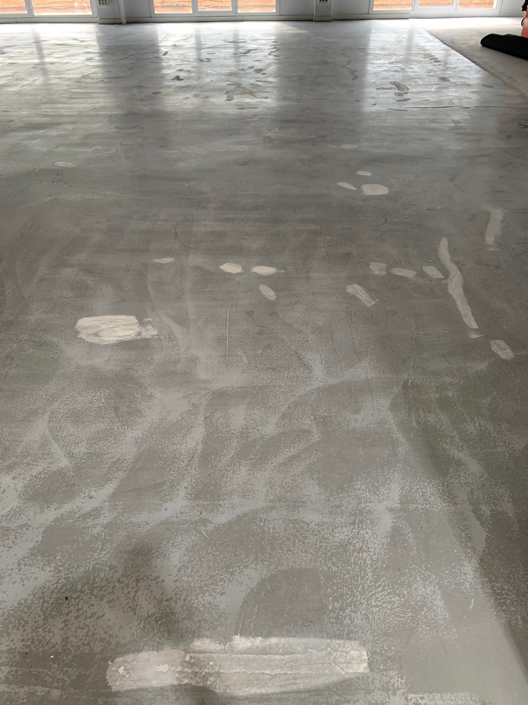
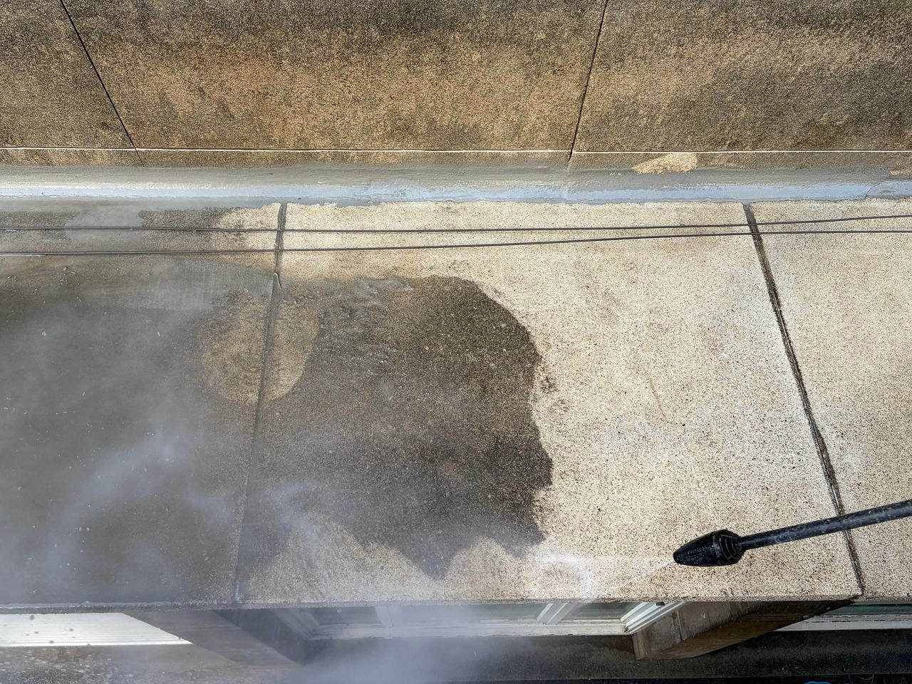
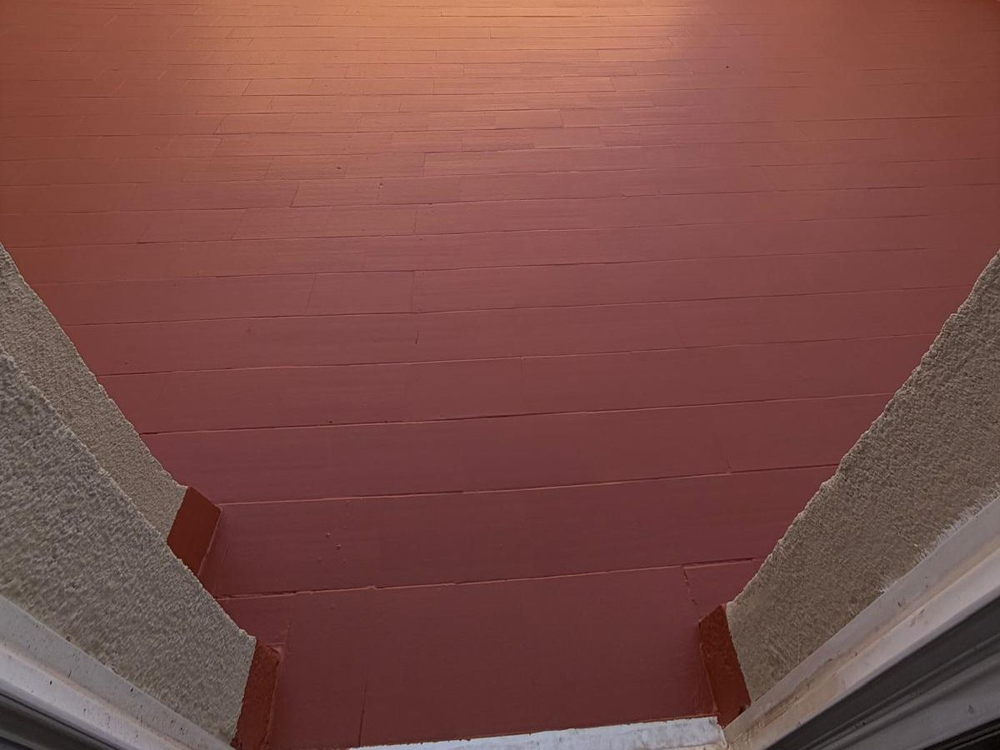

Impermeabilización: que no vuelva a entrar agua
Terrazas, azoteas y cubiertas de comunidades, viviendas y naves en Terrassa, Sabadell y el Vallès. Trabajamos con poliuretano líquido 100 % de Mamper: una membrana continua, sin solapes, que llega a sumideros, petos y encuentros.

Tres tipos de cubierta
Terrazas y azoteas
De comunidad o de vivienda, transitables: sobre la baldosa existente si está bien adherida, con acabado que se puede pisar.
Cubiertas de nave
Chapa, fibrocemento o losa: membrana continua que se adapta a tornillos, canalones y lucernarios.
Azoteas de comunidad
Cuando la mancha aparece en el techo del último piso: diagnóstico, presupuesto por partidas y calendario con el administrador.
En obra y terminada
A la izquierda, una cubierta durante la preparación del soporte, que es lo que decide cuánto dura la impermeabilización. A la derecha, una azotea con el suelo ya terminado.


Por qué poliuretano líquido
- Continuo
- Se aplica en líquido y forma una membrana sin solapes ni juntas, que es por donde suelen fallar las láminas.
- Se adapta
- Llega a sumideros, petos, esquinas, pasos de tubos y anclajes, los puntos donde entra el agua.
- Sin levantar
- En muchas terrazas se puede aplicar sobre la baldosa existente si está bien adherida, sin obra de derribo.
- Preparación
- Limpiar, sanear fisuras y juntas, revisar sumideros e imprimar: de esto depende que la membrana agarre.
Sobre impermeabilización
¿Hay que levantar la baldosa?
No siempre. Si la baldosa está bien adherida y la pendiente funciona, la membrana se aplica encima. Si está hueca o el agua se embalsa, hay que corregirlo antes.
¿Se puede pisar después?
Sí, con el acabado adecuado para tránsito. Te decimos cuándo se puede volver a usar la terraza según el sistema y el tiempo.
¿Qué necesitáis para el presupuesto?
Fotos de la terraza y de la mancha de abajo, los metros aproximados y qué hay ahora en el suelo.
¿Por dónde entra el agua?
Mándanos fotos de la terraza o la cubierta y de la mancha, los metros aproximados y la población.